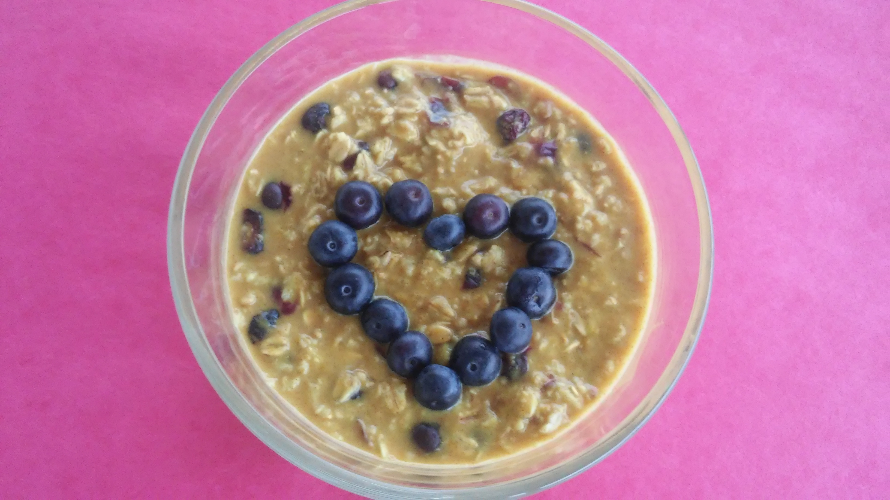

Cranberry-Orange Spiced Oatmeal

Description:
This receipe tells you how to make Cranberry-Orange Spiced Oatmeal.
Ingredients:
- 3/4 cup old-fashioned rolled oats
- 1/2 teaspoon ground cinnamon
- 1/4 cup dried cranberries
- 1/4 cup frozen blueberries
- 1/4 teaspoon ground tumeric (optional)
- 1 pinch ground giner>
- 1 cup water
- 1/4 cup orange juice, or as needed
Steps:
- Place the rolled oats, cinnamon, cranberries, and blueberries in a microwave safe bowl.
- Add the turmeric and ginger, if desired.
- Pour in the water, and stir to mix ingredients.
- Cook on High until water is absorbed, about 2 minutes.
- Stir in orange juice to desired consistency.